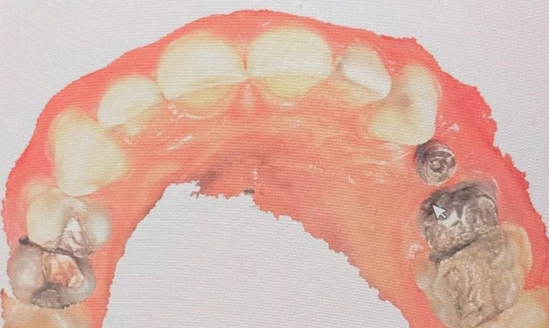

🟦 Insight 33 — گسترش هدفمند اسکن برای رسیدن به فرم بهتر

📝 توضیح بالینی
-
در اسکن داخل دهانی معمولاً تلاش میکنیم محدوده اسکن را تا حد ممکن محدود نگه داریم؛ زیرا با بزرگتر شدن ناحیه اسکن، خطاهای stitching افزایش پیدا میکند و ممکن است دقت نهایی اسکن کاهش یابد.
-
با این حال در بعضی کیسها میتوان این اصل را بهصورت آگاهانه کنار گذاشت.
-
در این بیمار، ناحیه ایمپلنت مربوط به پرهمولر اول فک بالا بود، اما دندان مجاور یعنی پرهمولر دوم فرم مناسبی نداشت و نمیتوانست مرجع قابل اعتمادی برای طراحی تاج باشد.
-
به همین دلیل محدوده اسکن را عمداً گسترش دادم تا پرهمولر اول سمت مقابل نیز داخل اسکن قرار بگیرد.
-
هدف این بود که تکنسین لابراتوار یک مرجع آناتومیک سالم در اختیار داشته باشد و فرم تاج را بر اساس آن طراحی کند، نه بر اساس دندانی که خود آن فرم صحیحی ندارد.
-
در واقع در اینجا مقدار کمی کاهش دقت عددی اسکن پذیرفته شد تا در مقابل، بتوان به فرم نهایی زیباتر و قابلقبولتر در طراحی تاج دست یافت.
✍️ دکتر فواد شهابیان
متخصص پروتزهای دندانی و ایمپلنت